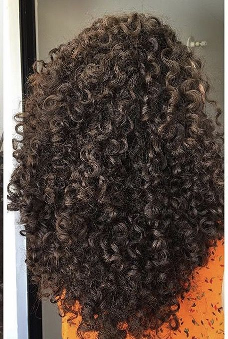
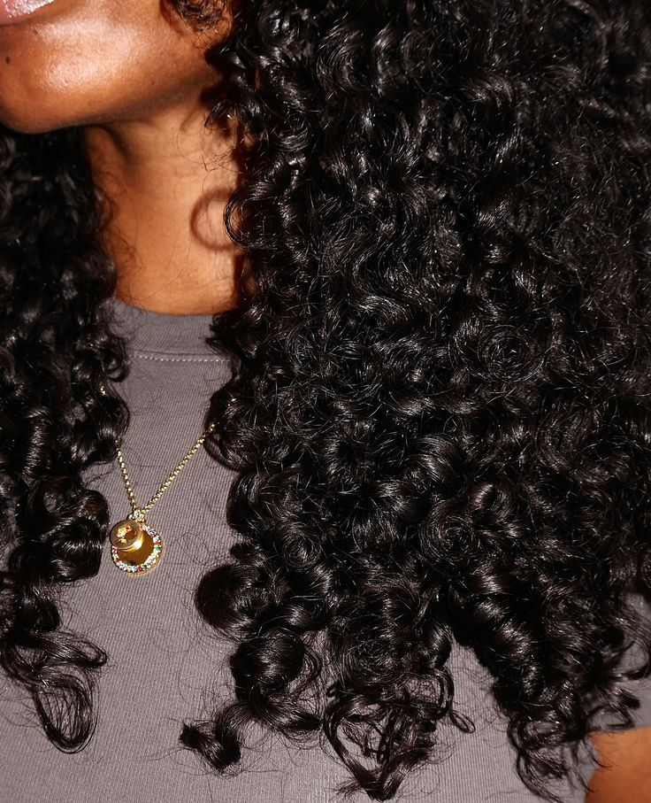

Cacheados
Características
Os cabelos cacheados possuem cachos bem definidos e elásticos, variando entre as curvaturas
Eles são classificados nas curvaturas:
3A
são maiores e mais abertos
3B
apresentam espirais mais fechadas e volumosas
3C
possuem cachos pequenos, bem definidos e com bastante densidade
Como a oleosidade natural do couro cabeludo encontra mais dificuldade para percorrer o fio, os cabelos cacheados tendem ao ressecamento e precisam de uma rotina de cuidados que inclua hidratação, nutrição e reconstrução.


A finalização com cremes, géis ou geleias ajuda a definir os cachos e controlar o frizz. Quando recebem os cuidados corretos, os cabelos cacheados apresentam excelente definição, volume equilibrado, brilho e muita versatilidade, podendo ser usados tanto com os cachos soltos quanto em penteados diversos.
 Tasha
Tasha
 Jotapê
Jotapê